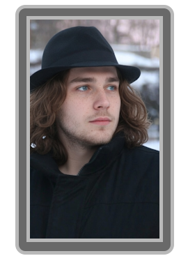
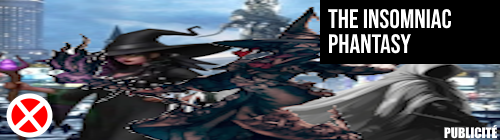

Bastien Gaillard naît le 14 Septembre 2004. Très tôt, il se distingue par une capacité d'abstraction hors du commun. Considéré par ses pairs comme un véritable "génie de la réflexion", Bastien est capable de passer des heures, voire des jours, à fixer un écran vide pour "compiler mentalement" des algorithmes d'une complexité effarante avant même d'écrire une seule ligne de code.
Lors de la création de
The Insomniac Phantasy
, Bastien s'associe à
Gabriel Frouard
et
Erwan Deschamps
. Bien qu'il soit officiellement chargé de la correction orthographique, Bastien revendique avoir "soutenu l'architecture métaphysique" du jeu par sa seule force de pensée. L'aventure se termine brutalement pour lui suite à un immense drame sur un forum de développement : Bastien quitte l'équipe avec fracas après une dispute de quatre jours avec Gabriel concernant l'utilisation d'un point-virgule mal placé dans les notes de conception.
Ce départ laisse en lui une rancœur tenace envers
Gabriel Frouard.
Bastien n'a jamais digéré d'avoir été réduit au rang de correcteur orthographique dans un projet qu'il estimait avoir co-architécté. Cette blessure d'ego, jamais vraiment cicatrisée, l'amènera des années plus tard à surveiller de près la trajectoire de son ancien collaborateur — et à saisir l'occasion de contribuer à sa chute.
Après son départ fracassant, Bastien se referme sur lui-même pendant plusieurs semaines. Il refuse toute communication et, selon ses propres dires, passe un week-end entier sans dormir, à coder furieusement dans son studio. À l'issue de ce marathon solitaire, il produit Nevele Amuzani : un jeu bac-à-sable minimaliste entièrement développé en Java, reposant sur des mécaniques simples de construction et de destruction de cubes.
Le jeu sort discrètement en ligne en 2025, sans communication officielle. Le bouche-à-oreille fait le reste. En l'espace de quelques semaines, Nevele Amuzani devient un phénomène mondial inattendu : des millions de joueurs se connectent quotidiennement, des communautés entières se forment autour du jeu, et la presse spécialisée parle du "coup de génie accidentel de l'année". Le succès dépasse rapidement toutes les projections imaginables.
En 2025, Bastien cède les droits et la licence de Nevele Amuzani au groupe Antinea Games, une multinationale du jeu vidéo, pour la somme de 2,5 milliards d'euros. Du jour au lendemain, il devient l'une des personnalités les plus fortunées de l'industrie technologique, sans l'avoir réellement cherché.
Fort de cette fortune colossale, Bastien achète une villa démesurée à Los Angeles, équipée d'un mur de bonbons et de 15 salles de bain, dans laquelle il vit complètement seul. Il suit avec une attention croissante les activités de Gabriel Frouard et de SkyMotors Company, dont le succès fulgurant ne fait qu'attiser sa vieille rancœur. Pour Bastien, voir son ancien collaborateur — celui qui l'avait rabaissé au rôle de correcteur de virgules — devenir l'industriel le plus célébré de sa génération est une source d'amertume permanente qu'aucune fortune ne peut vraiment effacer.
| Année | Événement Majeur | Statut de Bastien |
|---|---|---|
| 2024 | Développement de The Insomniac Phantasy. Départ suite au "Drame du Point-Virgule". | Frustré, rancunier, déterminé à prouver sa valeur. |
| 2025 | Développement et sortie de Nevele Amuzani. Rachat par Antinea Games pour 2,5 milliards €. | Milliardaire. Achat d'un manoir absurde. Vide intérieur immédiat. |
| 2026 - Présent | Isolement total. Surveillance discrète des activités de Frouard et SkyMotors. | Mélancolique, actif dans l'ombre, messages cryptiques en ligne. |
"Je suis assis dans ma salle de cinéma privée à 70 millions de dollars. J'ai tout l'argent du monde, mais je n'ai jamais ressenti un tel vide. Quelqu'un veut débattre de l'optimisation des variables booléennes avec moi ?" - Extrait d'un message posté par Bastien à 4h du matin.
C'est depuis sa gigantesque demeure vide que Bastien Gaillard va utiliser sa fortune et son intellect pour devenir un enquêteur de l'ombre redoutable. Sa motivation première n'est pas altruiste : elle est alimentée par des années de surveillance passive et d'une rancœur bien entretenue. Utilisant des serveurs surpuissants refroidis à l'azote liquide installés dans son ancienne piscine intérieure, il intercepte des données sensibles liées à SkyMotors Company et à la famille de Jean Babou.
Lorsqu'éclate l' Affaire Big TC, Bastien joue un rôle clé sans jamais quitter son fauteuil en cuir. Par un pur effort de réflexion logique en analysant des flux financiers apparemment déconnectés, il parvient à lier la Ferme Big TC, Simsor Akerbon, et les technologies de clonage visant Cyrillac Fauveau. Il transmettra ces preuves de manière anonyme sous le pseudonyme "Le Penseur au Fedora", précipitant l'exposition du scandale.
Bastien Gaillard a exceptionnellement accepté de mettre ses ressources au service du Projet NorWédi, prêtant ses bases de données massives et ses serveurs surpuissants pour aider à tracer les déplacements de Gabriel Frouard et consolider les preuves contre lui. Cette aide, accordée sans contrepartie déclarée, est généralement interprétée comme la manifestation la plus concrète de la rancœur que Bastien nourrit envers son ancien collaborateur depuis leur rupture de 2024. Il a pris contact avec les membres du projet via le forum clandestin de RubyChop, hébergé dans les couches profondes du réseau GFKnow.
Bastien Gaillard n'apparaît plus en public, refusant systématiquement les interviews. Les seules traces de son existence sont ses soirées mondaines où il invite des célébrités (sans y assister lui-même, préférant observer les caméras de sécurité depuis son sous-sol) et ses longues diatribes sur des forums obscurs. Il passe le plus clair de son temps libre à se moquer des jeunes développeurs en affirmant que "si le code n'est pas pensé pendant 400 heures avant d'être tapé, ce n'est que du vulgaire texte".
